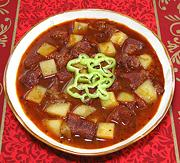
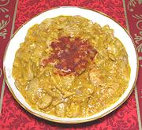
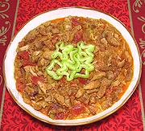
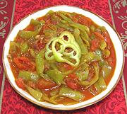
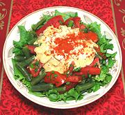
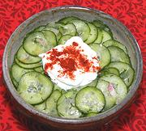
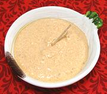
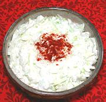
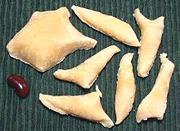

|

Gulyásleves |

Chicken Paprikás |

Pork Tokány |
|

Lecso - Peppers & Tomatoes |

Green Bean Tomato Salad [v] |

Cucumber Salad |
|

Körözött - Liptauer [f] |

Sour Cream Slaw [v] |

Galuska Dumplings [v] |